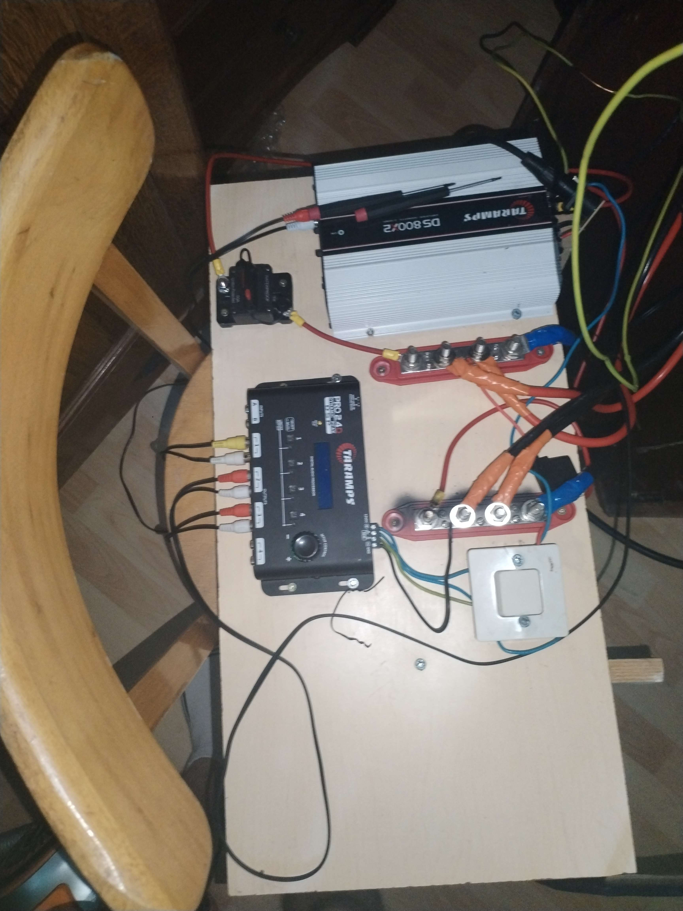
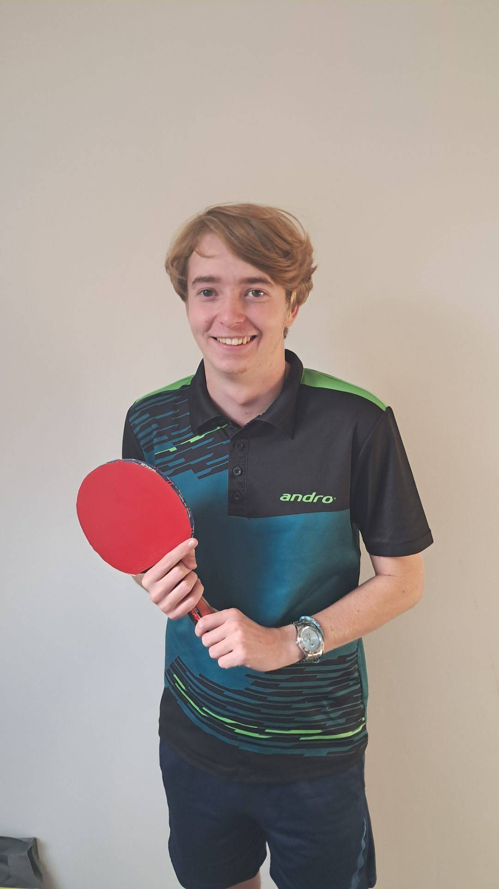

01 · Audio
Audio / DJ / Sono


À compléter
Tu peux ajouter ici une photo de set, d'événement ou d'un autre montage audio.
Ici, je regroupe ce qui m'occupe en dehors des cours. Le point commun entre ces activités : j'aime comprendre comment les choses fonctionnent, les régler proprement et progresser avec le temps.

